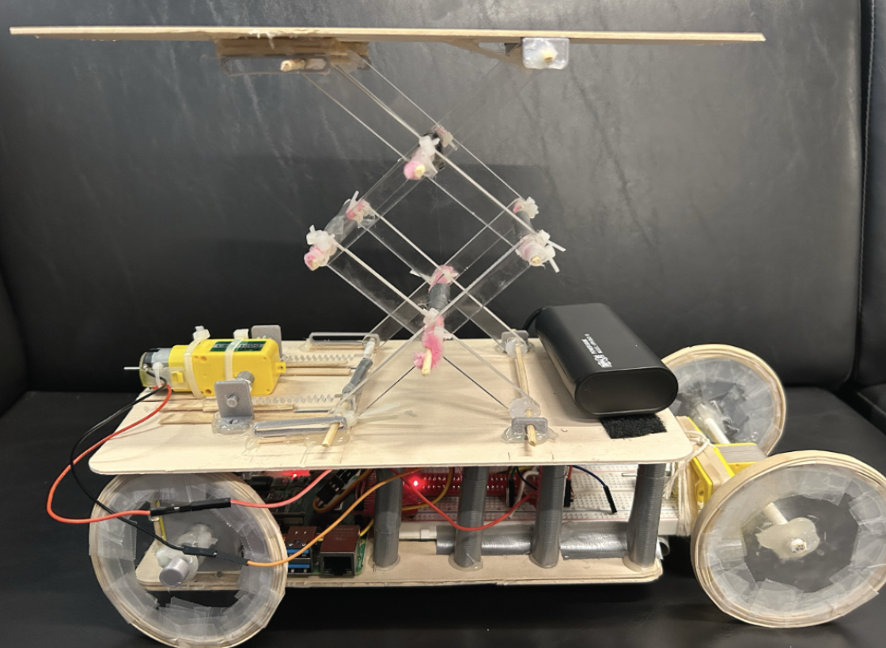
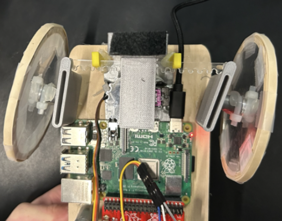
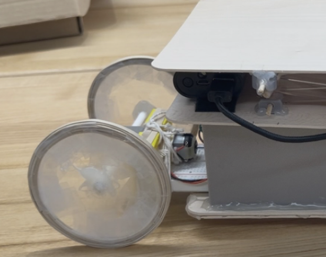

Assistive Remote-Control Car
Many standing-assist devices are bulky, expensive, or require a caregiver, limiting users' independence. Our team developed a mobile, Raspberry Pi-controlled assistive platform that helps individuals transition from kneeling to standing with greater autonomy.
The system features a rack-and-pinion scissor lift that raises users to standing height. A DC motor drives the rear wheels while a servo-actuated rack-and-pinion assembly handles steering; laser-cut wheels with elastic grip bands and a lightweight basswood frame round out the build.
Design Highlights:
- Scissor lift chosen specifically for higher load capacity over simpler alternatives
- Iterative build-test-integrate process, validating components individually before full-system testing
- Detailed documentation to track progress and avoid repeated mistakes
Skills Used
Media
See the elevated platform, as well as a closer view of the front and back wheels.


